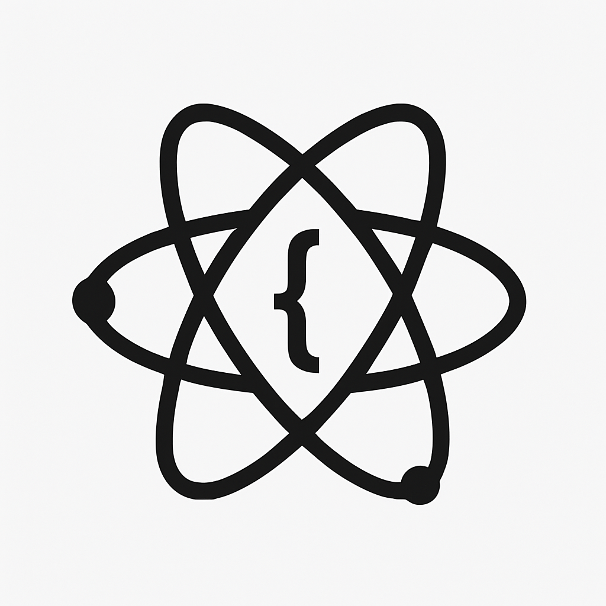

Semana 7

Descripción
Se estudió el uso de Hooks en React: useState, useEffect, useContext, useRef, useReducer, useCallback y useMemo.
También se desarrollaron hooks personalizados para modular lógica. Fuente:
React Docs.
Ejercicios de laboratorio - Resultados
Se implementó una app con múltiples hooks que gestionan estado, efectos secundarios y contexto global. Se refactorizó la lógica repetitiva en hooks personalizados.
Reflexión
¿Qué aprendí?: A gestionar el ciclo de vida de componentes de forma declarativa.
¿Cómo aprendí?: Estudiando casos reales, con acompañamiento docente y la guía oficial de React.